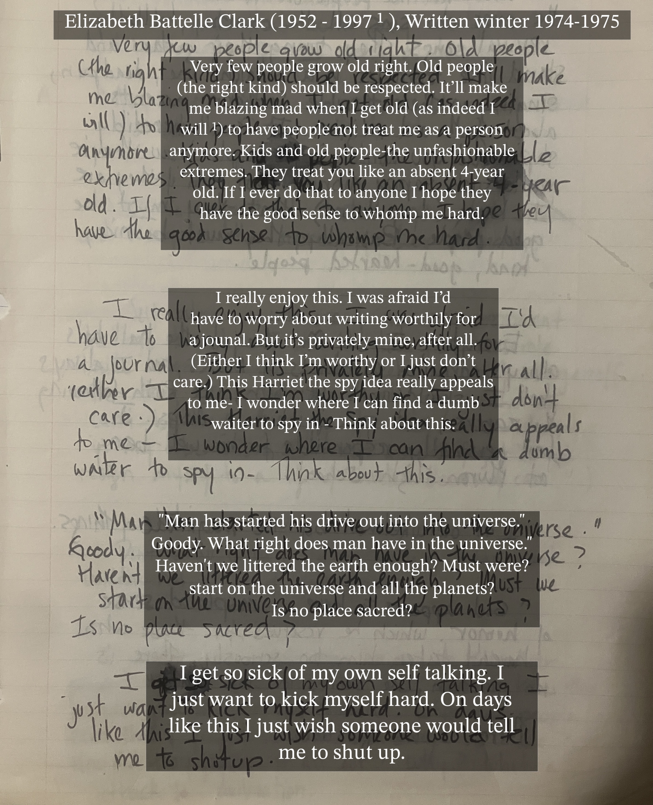

I hope Mr.MacMillan still gleefully points out every 9th grade year
how Odysseus coated the spear he lanced the cyclops Polyphemus in with
in sheep shit first
before he rammed it through the monster's only eye.
The moral seemed obvious to me: shut up.
Odysseus, who got off on going by 'no one'
gets off again by giving his name,
then gets got good by Poseidon.
Though I know I heard Mr.MacMillan retired.

shut up, shut up, I am so sick of love for your talking! to want and want and not to have it all this half centuries of of stony sleep Besty, Harriet! they took Harriet from us those those evil fucks the extremity of grief Oh, by the twain clanging issuing from our ocean cooled engine rooms the sound pipe wound vented banging with Enola Blue's grunts of exertion thrusting them flicking shovelfulls of the stuff for they're gay masters when you get to know them, wanting just to romp fast, than faster- there's things I know by sound, and here's one: You're horrid, just as I am wicked. As one we'll smear our fangs with lunar flow and faeces divide an evince our lances creamed with Vagisiled diseases of a reaming potency that still lingers on bone chipped Etruscan relics awaiting the right host to jump in- psycho eye is ripped, plucked and plundered. Run out the operculum, past the sheep machines, grab fat Cornwall's gagpipe all slick with neatly nail gouged vile eye jelly, the branded socket fired stabbed. Flee jettisoned getaway rocket. We survived the blast. Space is nearer here. Eons make a mobius strip rocking ages exchanging all our post script secrets. Savage galaxies tuck round sewage pitted with the fallen ages scoured on all but magic bubbles, in whose greased wake our ship beswitchingly slides by, until it's I who stomp and dominate, horridly, making you smile knowingly, a wicked grin. Together we make the whole world know what's right.By: Zoë Elizabeth Clark (1992 -